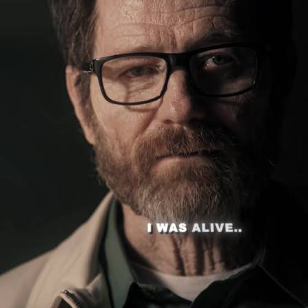

Your friendly neighbourhood IT guy
I go by the government name Prajwal Praveen. On the internet you'll find me as
@prawmathean or sometimes just P.
Your friendly neighbourhood tech support
I spend most of my day messing with my computer, fixing my Arch PC, scratching my own itch - something to help myself make the day better
or just because I wanted to see it working and if I could do that.
I just love the fact that you can craft something from nothing to something.
Literally from 0 to 1.
I've made a few low-level utility & CLI tools, web scrappers, websites, and other random stuffs because

Tools, websites, scripts, CLIs, bots - whatever scratches the itch. If I have to do something twice or if I got bored of it, I automate it. If I can't find a tool I want, I build it.
"Photography is truth. And cinema is truth twenty-four times a second."
- Jean-Luc Godard
I often mess around, break and inspect things - Just to see how it works under the hood.
I do CTFs, labs when I got bored. poke into systems if I find it intresting.
I use Arch Btw.
I guess Everything is self explanatory from that. 🙌🏻
I often crave for that fundamental and first principle level understanding of concepts. I like to see what's going on under the hood. I end up spending hours (maybe days) researching about smth - Because I was curious
- Question Everything.
- Think Clearly.
- Learn to code - it's kinda cool.
- When you know nothing matters, The World Is Yours.
"Just like a runner gets a kick out of running, I get a kick out of thinking, building, tinkering, and challenging myself."— Prajwal
I like learning things in first principles. Abstractions make me uncomfortable. I'd rather face the Aporia, push through it to understand what's under the hood, and see where the rabbit hole takes me. I feel alive when my code comes to life and does things. I'm always craving that "AHA" moment.
There are things in this world I could spend an eternity learning . and there would still be stuff left. That doesn't scare me. It excites me. Constantly learning, and forever will be.
If you you wanna get in touch, or just say
Hi Lol, here are my socials. Ping me